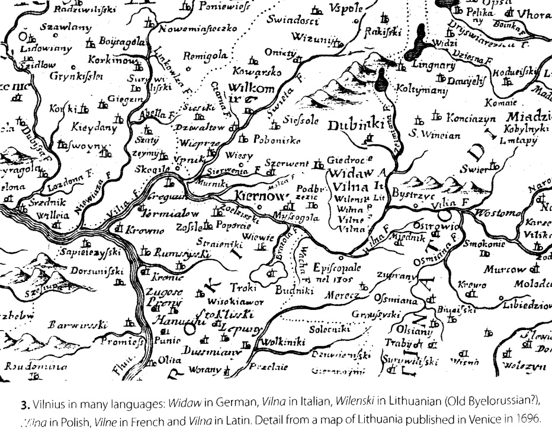

Rusn 309:
Lithuania and Russia in Context
Readings.
Laimonas Breidis.
Vilnius: City of Strangers.
Central European University Press, 2003.
Timothy Snyder.
The Reconstruction of Nations
Yale UP, 2009.
Theodore R. Weeks.
Vilnius between Nations, 1795–2000.
Cornell UP, 2015.

Fig. 1. A map from
Vilnius: City of Strangers